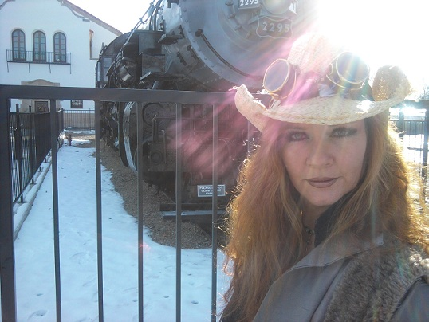

AnomalyCon 2011 Guests
(In Alphabetical Order by Last Name, Not Necessarily Listed in Order of Infamy)
Calliope of the Future
Calliope of the Future has been playing and touring since the summer of 2005. Founded in Detroit by vaudeville/circus performer Tovio Roberts as a 3 piece with accordion, sousaphone and drummer, the group has changed faces and shape over time, often having the appearance of a traveling collective of musicians. The main threads of the Calliope’s music are woven with narratives overlaying mathematical structures. They are currently a 4-piece with Tovio playing accordion, guitar, metallophone and mandolin, Helios on drums and other percussion, Michael Lukacovic on stand up bass and Sarah Polzin as esteemed tap-dancer. Their lyrical subjects range from personal to comical, including songs about Nikolai Tesla, famed sci-fi author Alistair Reynolds, and the fundamentalist preacher that declared spiritual war on Tovio’s family when he was a child. The Calliope has toured multiple times since its inception, twice in the states and twice in Europe (on bicycle), selling music, art and writing solely via small distros and shows. They are currently booking a springtime US tour, meant to be followed by a pan-continental bicycle circumnavigation.
Carnival Epsilon
Sharp blades, burning fire, and a silver fork. Simple items, and yet when you see what happens with them, you will understand why Carnival Epsilon’s motto of “Doing the extraordinary with the ordinary,”is not just a motto, but a way of life. Find out what limits they can push their bodies to. As an added treat, Professor Epsilon will have his famous elixirs on hand, as well as his private collection of the strange, the weird and the bizarre from around the world, all house in his legendary Cryptorium.
David Boop
David Boop is a single dad, published author, returning college student and full-time employee. His first novel, She Murdered Me with Science, was released in 08.He’s had nearly two dozen stories published in several genres, including steampunk. Dave was also recently featured in The Green Hornet Caebook anthology.More can be found on his work at www.davidboop.com.
Emperor Justinian Stanislaus
Emperor Justinian Stanislaus is a professional artist, creative director and founder of the infamous Red Fork Empire. The Emperor provides audiences with a fresh new outlook on the traditional convention experience. The Emperor’s easily recognizable character and established standing within the Steampunk community has led to appearances on MTV, and Attack of the Show as well as interviews in the pages of Fangoria and Coal City Steam. A graduate of the exclusive Ringling art college, the Emperor’s unique artistic vision has been featured in numerous galleries from his notorious Still Theatre solo series to international compilation shows such as Dr. Grymm’s Steampunk Bizarre.
James R. Strickland
James R. Strickland wrote his first story at the tender age of 3 1/2. Publication took somewhat longer. Strickland is the author of the future noir novels Looking Glass, published in 2007, and Irreconcilable Differences, which was released at Worldcon 2008, in Denver. He is also the author of the steampunk-western story Brass and Steel, which appears in Science Fiction Trails magazine. His new short novel, On Gossamer Wings is set in Jeff Duntemann’s Drumlins universe, and will be introduced at Anomaly Con. On Gossamer Wings, along with Duntemann’s short novel Drumlin Circus will be published by Copperwood Press as a single volume in tête-bêche layout, recalling the Ace Doubles of the 1950s-1970s.
Jeff Duntemann
Jeff Duntemann has written SF for professional markets since 1974, primarily hard SF, but more recently in the SF western and steampunk categories. He has appeared twice on the final Hugo Awards ballot. His first novel, The Cunning Blood, was published in 2005, and his SF short fiction has been reprinted in two collections, Souls in Silicon and Cold Hands and Other Stories. His recent work has been set in the Drumlins universe, in which castaways from Earth establish a wild west/1890s society on a planet abandoned by alien inhabitants who left millions of inexplicable machines behind. His new short novel, Drumlin Circus, will be introduced at Anomaly Con, published with James Strickland’s short novel, On Gossamer Wings. The two novels will be published by Copperwood Press as a single volume in tête-bêche layout, recalling the Ace Doubles of the 1950s-1970s.
Kronda Seibert
Kronda Seibert is a local legend in her own mind. She took over the Colorado Steampunks in September of 2009 because no one else wanted the job at the time. That group has grown under her tutelage (and a promise of cake) from 32 members to its current 950+ strong. She specializes in event planning and business.
Kronda is the author of most of the episode scripts for Radio STEAM, as well as the voice talent for Captain Dez Black. She prefers that people do not remind her of how young she sounds on recordings.
Kronda’s first novel, a dystopian steampunk novel about a young heroine possessing a feared power who must race against time to save her ravaged world from being destroyed again, Beneath the Crust, is scheduled to premier at Anomaly Con 2012.
London Homer-Wambeam
London Homer-Wambeam wrote, directed, and edited his feature-length Steampunk moving picture, FOREWARNED, during the spring and summer of 2010 when he was 14 years old. Forewarned features a cast of 20 and is billed as being the best airship pirate, time-travel, mad scientist, insane asylum movie of the year. London, who has been homeschooled since kindergarten, won “Best Student Documentary,” at the New York International Independent summer 2010 film festival for his short film about Einstein’s Theory of Relativity. He placed 5th in the nation at National History Day for his performance on the Politics of Dr. Seuss in 2009. Most recently, London led his FIRST Lego League robotics programming team to win the Wyoming grand championship beating out 60 other teams. The team, The Automaton Lords of Laramie will compete at the national competition in California in May.
See this link to see the news article about FOREWARNED. See the Trailer for Forewarned Here.
Michelle Black
Michelle Black is the author of six novels of Victorian suspense, including THE SECOND GLASS OF ABSINTHE, set in 1880 Leadville, Colorado. Her next mystery, SÉANCE IN SEPIA, featuring real-life feminist firebrand, Victoria Woodhull, and the world of Victorian spirit photography, will be published in October 2011. She also writes freelance nonfiction articles on a variety of Steampunk topics. In addition to writing, she has practiced law, published a course in the Cheyenne language, and owned a bookstore in Frisco, Colorado. She can be reached through her website, www.MichelleBlack.com, where readers can access the first chapters of all her novels. She blogs at www.TheVictorianWest.com.
Myles Pinkney
Myles Pinkney has been creating popular Fantasy & Science Fiction images for over 20 years. His artwork is enjoyed through his award winning calendars, book and magazine covers, posters, prints, note cards, life-sized stand-ups, t-shirts, puzzles, collector plates and sculptures. He is known worldwide for his dramatic paintings set in environments of incredible detail. The textures are lush, colorful and palpable, whether depicting sumptuous velvet or blazing fire. The richly attired characters who inhabit his worlds are full of inner life and personality. In 2010 his artwork was featured twice on covers of Faerie Magazine. The summer issue (Issue 20) included 2 articles about him, one about his artwork and another featuring his Steampunk work. His clients have included such companies as Portal Publications, Ceaco, Masterpieces, FX Schmid, Sellers Publishing, Westland Giftware, The Mountain Corporation, Heaven & Earth Designs, Tree Free Greetings, Advanced Graphics, Ardleigh Elliott, The Franklin Mint and The Bradford Exchange. Giclée prints of his artwork are available through his web site, www.mylespinkney.com.
Pandora Celtica
“Hail to thee Bright Beings, We are Pandora Celtica, a dark faerie acapella band from the lands of dream and myth. We’ve been brought together by the Queens and Kings of the Fae for your entertainment. We bring you rich harmonies, tribal drumming and ancient songs of sorrow, loss and longing. Be you fae, goblin, ghost, lord, lady, angel, demon or some other kith… we invite you to take off the mask that you show to the mundane world and revel with us as you truly are. A soul with no freedom is no soul at all! Every time we meet, our music and love will be your reprieve from your worldly lives, your gateway to your true selves! Let us move you. Let us thrill you. Let us free you. We thank you for inviting us to share in this mad steampunk celebration you call AnomalyCon!”
Quincy Allen
Classically trained, Quincy Allen received his Bachelor’s in English and a minor in writing. He completed significant graduate work in speculative, world and women’s literature, and during that time also taught writing at the University of Northern Colorado. Quincy then spent 17 years slave to that hellish pit people refer to as IT. Recently, the gods of corporate acquisition put him in a position to rediscover his muse and put her to work.
He has two episodes coming up in the new Internet radio show The Spectacular Tales of the Extraordinary Airship Mórríghan. His creative work can also been seen in AiM and Short, Fast and Deadly. He has non-fiction work published at www.eHow.com and www.BeatThis.com, and his full manuscript Chemical Burn is currently under review. Quincy will be writing science, speculative, thriller and crime fiction till the day he dies.
Sarah A. Hoyt
Sarah A. Hoyt writes science fiction, fantasy, mystery and (she’s been told) romantic historical fiction. She’s published around twenty (she hasn’t counted lately) novels and over a hundred short stories. Her latest novels are the space opera Darkship Thieves, the historical No Wish But His, The Story of Kathryn Howard and the mystery A French Polished Murder (under pen name Elise Hyatt). Since she was born and grew up in a village in Portugal at a level of technology and social intercourse best characterized as somewhere between Elizabethan and Victorian England, she has committed steampunk in her Magical British Empire series — Heart of Light, Soul of Fire and Heart and Soul detail the late nineteenth and early twentieth century in a world with strange magic powered contraptions — and dragons — in the empire upon which the sun never set. The first chapters of each of the three books can be found at http://sarahahoy2011t.com
Symphonic Anime Orchestra
The Symphonic Anime Orchestra (SAO) concept was born in 2004 at Colorado’s premier anime convention, Nan Desu Kan. That year, Kathryn Vedder –a long-time Anime fan and NDK attendee — approached NDK’s programming director about adding to the convention by incorporating more traditional western instruments. The convention took a leap of faith and invited Vedder to start her own ensemble. After a few summer rehearsals, the music began to come together and Japanese pop tunes could now be heard as performed by classical musicians.
Tanglwyst de Holloway
 Tanglwyst de Holloway, aka Tonya Adolfson, teaches panels on everything from making your own patterns to basic armor creation, from character creation to proper flirting. She’s been a professional costumer for 22 years and has worked in the costume shops of Southern Utah University and the Utah Shakespearean Festival. Tangl has done wigs, make up, props and movement for the stage, and turned her impressive set of skills to teaching at Society for Creative Anachronism events. She fell in love with Steampunk while doing panels at conventions, and has thrown herself fully into this intriguing genre. Luckily, many of her skills apply very well to the re-imaginative world of Steampunk and she adores the innovation and freedom Steampunk allows.
Tangl’s book, Thine Enemy’s Eyes, is the first novel released by Fantastic Journeys Publishing. As a co-founder, Tangl looks for submissions from other authors, helping them to tune their writing and realize their dreams. “The company is run by authors, for authors, and is small enough to give you individual attention. We welcome submitters and want to learn about your endeavors!”
Her website is www.tangledwebsonline.com.
Terry Kroenung
Terry Kroenung is a Bartitsu instructor, Shakespeare impersonator, writing teacher, and former Army infantry officer. He is the author of Brimstone and Lily, winner of the Bronze Medal in Fantasy/Sci-Fi at the 2010 Independent Publishers Book Awards and its new sequel, Jasper’s Foul Tongue. His Steampunk novel Paragon of the Eccentric is being considered by Del-Ray. Find out more about him at www.legacystone.net.
Ukulele Loki and the Gadabout Orchestra
Ukulele Loki’s Gadabout Orchestra: a Denver-based, six-piece chamber-pop band that weaves the lyrical cleverness and melodic considerations of the tin pan-alley era; the chamber-pop and harmonic arrangements of Sgt. Pepper era 60s Psychedelia; the brooding melancholia of 80s post-punk; and the DIY ethos of contemporary indie bands into an unclassifiable genre of it’s own invention. Attempts to describe their music have resulted in terms like “indie-pan alley,” “melancholy circus rock,” and “Sepiachord.” They have played with countless contemporaries, including The Dresden Dolls, the group has also collaborated with Elephant Six members: The Apples in Stereo and Neutral Milk Hotel.
As Jason Heller wrote in The Onion, “Ukulele Loki’s Gadabout Orchestra reaches backward, forward, and into deep pockets of timeless pop weirdness, leading tuba, clarinet, trombone, glockenspiel, and melodica on a motley march through lush and bright-eyed melancholy. Threads of Tin Pan Alley whimsy and Kurt Weil-esque menace run through the album.”
As a pioneer of the current ukulele revival, Loki has been Johnny-Appleseeding the instrument across the US and to Japan since 2000. Additionally, his jobs as a sideshow talker, free-form radio DJ, neo-vaudevillian, and burlesque producer have afforded him unusual outlets for his anachronistic take on song writing. Newer material incorporates modern production, electric effects, and synthesizers. If the Steampunk aesthetic had a time-traveling musical counterpart, it would sound like The Gadabout Orchestra.